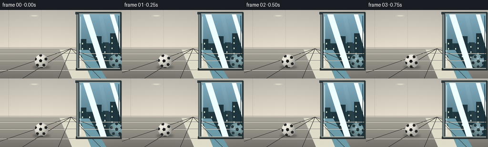
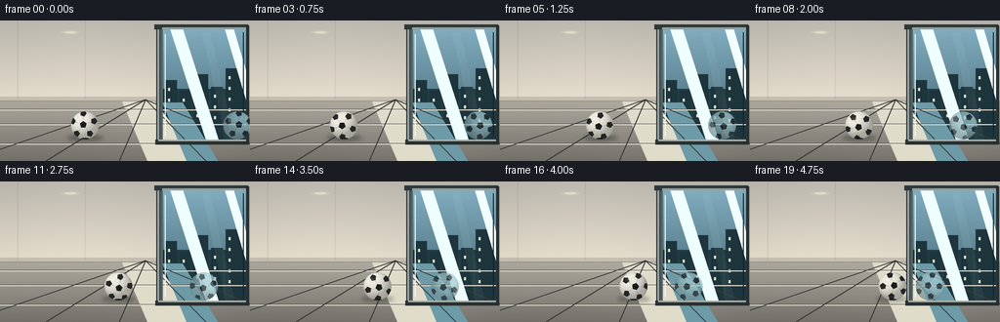

CODING AGENTS AS PIXEL WORLD MODELS
traex/GPT-5.6-Sol · phygen_062
点击播放 · 原生 RGB 像素
逐轮保存的候选
回放视频、检查图与代码变化。
每份候选均可单独播放。实际图片检查记录在下方工具轨迹中。
候选 01播放与检查图
点击播放 · 原生 RGB 像素


展开代码变化
--- 上一保存版本
+++ 本次保存版本
@@ -0,0 +1,274 @@
+from pathlib import Path
+import math
+
+import numpy as np
+from PIL import Image, ImageDraw, ImageFilter
+
+import artifact_io
+
+
+W, H = 256, 144
+N = 20
+SS = 4
+PANE_X = 165.0
+
+
+def sc(v):
+ return int(round(v * SS))
+
+
+def poly(draw, points, fill, outline=None, width=1):
+ pts = [(sc(x), sc(y)) for x, y in points]
+ draw.polygon(pts, fill=fill)
+ if outline is not None:
+ draw.line(pts + [pts[0]], fill=outline, width=sc(width), joint="curve")
+
+
+def build_background():
+ """Render a quiet modern corridor and a distinctly vertical blue glass pane."""
+ h, w = H * SS, W * SS
+ yy = np.arange(h)[:, None] / SS
+ xx = np.arange(w)[None, :] / SS
+ rgb = np.zeros((h, w, 3), dtype=np.float32)
+
+ # Warm plaster wall, softly lit from the window.
+ t = np.clip(yy / 88.0, 0, 1)
+ wall_top = np.array([185, 181, 172], np.float32)
+ wall_low = np.array([231, 222, 205], np.float32)
+ rgb[:] = wall_top + (wall_low - wall_top) * t[..., None]
+ rgb += 4.0 * np.sin(xx[..., None] * 0.018)
+
+ # Polished floor with depth gradient.
+ floor = yy >= 82
+ ft = np.clip((yy - 82) / 62.0, 0, 1)
+ fc0 = np.array([172, 168, 157], np.float32)
+ fc1 = np.array([115, 112, 106], np.float32)
+ floor_rgb = fc0 + (fc1 - fc0) * ft[..., None]
+ floor_rgb = floor_rgb + 5 * np.exp(-((xx[..., None] - 176) / 72) ** 2)
+ rgb = np.where(floor[..., None], floor_rgb, rgb)
+
+ img = Image.fromarray(np.uint8(np.clip(rgb, 0, 255)), "RGB")
+ d = ImageDraw.Draw(img, "RGBA")
+
+ # Wall architectural details and a recessed ceiling light.
+ d.rectangle((sc(0), sc(78), sc(162), sc(83)), fill=(113, 111, 106, 70))
+ d.line((sc(18), sc(0), sc(18), sc(81)), fill=(90, 88, 84, 35), width=sc(1))
+ d.line((sc(87), sc(0), sc(87), sc(81)), fill=(90, 88, 84, 25), width=sc(1))
+ d.ellipse((sc(62), sc(10), sc(82), sc(14)), fill=(255, 245, 211, 35))
+ d.ellipse((sc(66), sc(11), sc(78), sc(13)), fill=(255, 252, 225, 105))
+
+ # Main glass: outdoor blue sky and muted urban silhouettes behind it.
+ gx0, gy0, gx1, gy1 = sc(166), sc(7), sc(253), sc(124)
+ glass = Image.new("RGBA", (w, h), (0, 0, 0, 0))
+ ga = np.zeros((h, w, 4), dtype=np.uint8)
+ maskx = (np.arange(w)[None, :] >= gx0) & (np.arange(w)[None, :] <= gx1)
+ masky = (np.arange(h)[:, None] >= gy0) & (np.arange(h)[:, None] <= gy1)
+ gm = maskx & masky
+ gt = np.clip((yy - 7) / 117.0, 0, 1)
+ sky0 = np.array([125, 174, 195], np.float32)
+ sky1 = np.array([48, 84, 99], np.float32)
+ gc = sky0 + (sky1 - sky0) * gt[..., None]
+ ga[..., :3] = np.uint8(np.clip(gc, 0, 255))
+ ga[..., 3] = np.where(gm, 232, 0).astype(np.uint8)
+ glass = Image.fromarray(ga, "RGBA")
+ img = Image.alpha_composite(img.convert("RGBA"), glass)
+ d = ImageDraw.Draw(img, "RGBA")
+
+ # Distant skyline/trees visible through the lower part of the window.
+ d.rectangle((sc(166), sc(70), sc(253), sc(123)), fill=(33, 60, 66, 42))
+ buildings = [
+ (169, 61, 181, 123), (184, 72, 195, 123), (198, 55, 213, 123),
+ (216, 68, 228, 123), (231, 49, 251, 123),
+ ]
+ for j, (x0, y0, x1, y1) in enumerate(buildings):
+ d.rectangle((sc(x0), sc(y0), sc(x1), sc(y1)), fill=(30, 53, 61, 31 + j * 3))
+ for wy in range(y0 + 8, min(y1, 103), 11):
+ d.rectangle((sc(x0 + 3), sc(wy), sc(x0 + 5), sc(wy + 3)),
+ fill=(214, 224, 201, 28))
+
+ # Long reflections in the polished floor.
+ poly(d, [(125, 83), (158, 83), (206, 144), (151, 144)], (224, 220, 202, 18))
+ poly(d, [(166, 84), (187, 84), (223, 144), (191, 144)], (109, 155, 168, 18))
+
+ # Floor grout/perspective lines.
+ for y in (91, 106, 126):
+ d.line((sc(0), sc(y), sc(255), sc(y)), fill=(63, 64, 62, 28), width=sc(1))
+ d.line((sc(0), sc(y + .6), sc(255), sc(y + .6)), fill=(236, 232, 217, 17), width=sc(1))
+ van = (sc(149), sc(81))
+ for xb in (-35, 47, 122, 211, 301):
+ d.line((van[0], van[1], sc(xb), sc(144)), fill=(55, 57, 56, 31), width=sc(1))
+
+ # Reflections/glints on the window itself.
+ poly(d, [(174, 8), (187, 8), (224, 123), (211, 123)], (239, 255, 255, 20))
+ poly(d, [(230, 8), (239, 8), (253, 55), (253, 85)], (243, 255, 255, 14))
+ d.line((sc(169), sc(14), sc(169), sc(118)), fill=(238, 255, 255, 37), width=sc(1))
+ d.line((sc(249), sc(12), sc(249), sc(119)), fill=(12, 38, 47, 45), width=sc(1))
+
+ # Heavy aluminum frame establishes the glass as a vertical window plane.
+ d.rectangle((sc(160), sc(5), sc(166.4), sc(126)), fill=(35, 43, 44, 255))
+ d.rectangle((sc(161), sc(6), sc(163), sc(125)), fill=(150, 159, 156, 255))
+ d.rectangle((sc(164), sc(7), sc(166.4), sc(124)), fill=(83, 96, 96, 255))
+ d.rectangle((sc(158), sc(4), sc(254), sc(9)), fill=(47, 57, 58, 255))
+ d.rectangle((sc(166), sc(7), sc(253), sc(9)), fill=(147, 161, 162, 210))
+ d.rectangle((sc(159), sc(122), sc(254), sc(127)), fill=(42, 49, 49, 255))
+ d.rectangle((sc(162), sc(122), sc(253), sc(123.5)), fill=(172, 179, 172, 220))
+ d.rectangle((sc(252), sc(5), sc(255), sc(127)), fill=(40, 49, 50, 255))
+
+ # Fixed fine texture removes sterile flatness without animation flicker.
+ arr = np.asarray(img.convert("RGB"), dtype=np.int16)
+ rng = np.random.default_rng(6241)
+ noise = rng.normal(0, 0.85, arr.shape[:2])[:, :, None]
+ arr = np.clip(arr + noise, 0, 255).astype(np.uint8)
+ return Image.fromarray(arr, "RGB").convert("RGBA")
+
+
+def regular_polygon(cx, cy, radius, sides, rotation):
+ return [
+ (cx + radius * math.cos(rotation + 2 * math.pi * k / sides),
+ cy + radius * math.sin(rotation + 2 * math.pi * k / sides))
+ for k in range(sides)
+ ]
+
+
+def make_ball(radius, rotation, mirrored=False, reflection=False):
+ """Create an antialiased shaded football sprite with an animated panel pattern."""
+ pad = 4.0
+ size = int(math.ceil((radius * 2 + pad * 2) * SS))
+ r = radius * SS
+ c = size / 2
+ y, x = np.mgrid[0:size, 0:size]
+ nx = (x + .5 - c) / r
+ ny = (y + .5 - c) / r
+ rr = nx * nx + ny * ny
+ inside = rr <= 1
+ nz = np.sqrt(np.maximum(0, 1 - rr))
+ # Diffuse upper-left illumination plus strong spherical rim shading.
+ light = np.array([-0.48, -0.66, 0.58])
+ light /= np.linalg.norm(light)
+ diffuse = np.maximum(0, nx * light[0] + ny * light[1] + nz * light[2])
+ rim = np.clip(nz, 0, 1) ** .55
+ tone = 142 + 74 * diffuse + 37 * rim
+ ball = np.zeros((size, size, 4), dtype=np.uint8)
+ for k, scale in enumerate((1.00, .985, .94)):
+ ball[..., k] = np.uint8(np.clip(tone * scale, 0, 255))
+ # Smooth one-pixel antialiased edge in supersampled space.
+ alpha = np.clip((1.02 - np.sqrt(rr)) * r, 0, 1) * 255
+ ball[..., 3] = np.uint8(alpha)
+ sphere = Image.fromarray(ball, "RGBA")
+
+ # Draw classic dark pentagons and seams, rotating clockwise as ball travels.
+ pattern = Image.new("RGBA", (size, size), (0, 0, 0, 0))
+ pd = ImageDraw.Draw(pattern, "RGBA")
+
+ def tr(px, py):
+ ca, sa = math.cos(rotation), math.sin(rotation)
+ return (c + (px * ca - py * sa) * r,
+ c + (px * sa + py * ca) * r)
+
+ center = tr(-.12, -.06)
+ central = regular_polygon(center[0], center[1], .255 * r, 5, rotation - math.pi / 2)
+ pd.polygon(central, fill=(24, 27, 27, 255))
+ pd.line(central + [central[0]], fill=(7, 9, 9, 230), width=max(1, int(.028 * r)), joint="curve")
+
+ outer_centers = []
+ for k in range(5):
+ a = -math.pi / 2 + k * 2 * math.pi / 5
+ bx, by = -.12 + .81 * math.cos(a), -.06 + .81 * math.sin(a)
+ oc = tr(bx, by)
+ outer_centers.append(oc)
+ pent = regular_polygon(oc[0], oc[1], .235 * r, 5, rotation + a + math.pi / 2)
+ pd.polygon(pent, fill=(31, 34, 33, 250))
+ pd.line(pent + [pent[0]], fill=(7, 9, 9, 210), width=max(1, int(.025 * r)), joint="curve")
+ for oc in outer_centers:
+ vx, vy = oc[0] - center[0], oc[1] - center[1]
+ q0 = (center[0] + vx * .48, center[1] + vy * .48)
+ q1 = (center[0] + vx * .71, center[1] + vy * .71)
+ pd.line((q0, q1), fill=(81, 84, 80, 200), width=max(1, int(.035 * r)))
+
+ # Keep all texture strictly on the sphere.
+ circle_mask = Image.fromarray(np.where(inside, 255, 0).astype(np.uint8), "L")
+ pattern.putalpha(Image.composite(pattern.getchannel("A"), Image.new("L", (size, size), 0), circle_mask))
+ sphere = Image.alpha_composite(sphere, pattern)
+
+ # Gloss highlight over the leather.
+ gloss = Image.new("RGBA", (size, size), (0, 0, 0, 0))
+ gd = ImageDraw.Draw(gloss, "RGBA")
+ gd.ellipse((c - .58*r, c - .66*r, c - .15*r, c - .35*r), fill=(255, 255, 245, 35))
+ gloss = gloss.filter(ImageFilter.GaussianBlur(max(1, int(.08*r))))
+ sphere = Image.alpha_composite(sphere, gloss)
+
+ if mirrored:
+ sphere = sphere.transpose(Image.Transpose.FLIP_LEFT_RIGHT)
+ if reflection:
+ a = np.asarray(sphere).copy()
+ # Blue-green glass tint and lower contrast characteristic of a reflection.
+ col = a[..., :3].astype(np.float32)
+ gray = col.mean(axis=2, keepdims=True)
+ col = gray + .66 * (col - gray)
+ col *= np.array([.66, .82, .87], dtype=np.float32)
+ col += np.array([8, 13, 15], dtype=np.float32)
+ a[..., :3] = np.uint8(np.clip(col, 0, 255))
+ a[..., 3] = np.uint8(a[..., 3].astype(np.float32) * .73)
+ sphere = Image.fromarray(a, "RGBA")
+ return sphere
+
+
+def paste_center(canvas, sprite, cx, cy):
+ x = int(round(cx * SS - sprite.width / 2))
+ y = int(round(cy * SS - sprite.height / 2))
+ canvas.alpha_composite(sprite, (x, y))
+
+
+def make_frame(bg, index):
+ frame = bg.copy()
+ d = ImageDraw.Draw(frame, "RGBA")
+ u = index / (N - 1)
+ # Constant translation toward the pane. Reflection obeys exact planar symmetry.
+ ball_x = 87.0 + 59.0 * u
+ refl_x = 2 * PANE_X - ball_x
+ radius = 14.2
+ ball_y = 107.4
+ rotation = -(ball_x - 87.0) / radius
+
+ # Soft contact/cast shadow; it shortens slightly near the bright window.
+ shadow = Image.new("RGBA", frame.size, (0, 0, 0, 0))
+ sd = ImageDraw.Draw(shadow, "RGBA")
+ sw = 18.5 - 2.0 * u
+ sd.ellipse((sc(ball_x - sw), sc(117.2), sc(ball_x + sw), sc(123.2)),
+ fill=(18, 20, 20, int(91 - 18*u)))
+ shadow = shadow.filter(ImageFilter.GaussianBlur(sc(2.0)))
+ frame = Image.alpha_composite(frame, shadow)
+
+ # Reflection is laid down first, behind the pane's foreground glints.
+ reflected_ball = make_ball(radius, rotation, mirrored=True, reflection=True)
+ paste_center(frame, reflected_ball, refl_x, ball_y)
+
+ # A pane-specific vertical glare passes over the reflected image.
+ glare = Image.new("RGBA", frame.size, (0, 0, 0, 0))
+ gd = ImageDraw.Draw(glare, "RGBA")
+ poly(gd, [(207, 12), (215, 12), (240, 122), (231, 122)], (228, 249, 250, 13))
+ gd.line((sc(168.5), sc(12), sc(168.5), sc(120)), fill=(236, 255, 255, 31), width=sc(1))
+ frame = Image.alpha_composite(frame, glare)
+
+ # Real ball in the corridor foreground.
+ real_ball = make_ball(radius, rotation, mirrored=False, reflection=False)
+ paste_center(frame, real_ball, ball_x, ball_y)
+
+ # Tiny soft ambient occlusion at the ball/floor contact.
+ d = ImageDraw.Draw(frame, "RGBA")
+ d.ellipse((sc(ball_x - 4), sc(120.3), sc(ball_x + 4), sc(121.4)), fill=(25, 25, 23, 43))
+
+ # Downsample from 4x for clean geometric antialiasing.
+ out = frame.convert("RGB").resize((W, H), Image.Resampling.LANCZOS)
+ return np.asarray(out, dtype=np.uint8)
+
+
+def main():
+ case_dir = Path(__file__).resolve().parent
+ bg = build_background()
+ frames = np.stack([make_frame(bg, i) for i in range(N)], axis=0)
+ artifact_io.save(frames, case_dir)
+
+
+if __name__ == "__main__":
+ main()
可观测工具轨迹
实际执行的命令与返回图片。
命令 1exit 0
/bin/bash -lc "cat prompt.txt && printf '\\n--- GENERATION_RULES.md ---\\n' && cat GENERATION_RULES.md"
命令 2exit 0
/bin/bash -lc "cat task_spec.json && printf '\\n--- files ---\\n' && find . -maxdepth 2 -type f -printf '%p\\n' | sort"
命令 3exit 0
/bin/bash -lc "sed -n '1,260p' artifact_io.py"
命令 4exit 1
/bin/bash -lc "python generate.py && python - <<'PY'
from pathlib import Path
import numpy as np
from PIL import Image
p=Path('.')
z=np.load('pixels.npz')['pixels']
print('pixels',z.shape,z.dtype,'frames',len(list((p/'frames').glob('*.png'))))
print('artifacts',[(x.name,x.stat().st_size) for x in [p/'pixels.npz',p/'inspection.png',p/'transition_check.png',p/'index.html']])
# temporal change and endpoint checks
f=np.stack([np.array(Image.open(f'frames/{i:02d}.png')) for i in range(20)])
print('mean abs consecutive',np.abs(f[1:].astype(int)-f[:-1].astype(int)).mean(axis=(1,2,3)).round(3))
PY"命令 5exit 0
/bin/bash -lc "python generate.py && python - <<'PY'
from pathlib import Path
import numpy as np
from PIL import Image
p=Path('.')
z=np.load('pixels.npz')['pixels']
print('pixels',z.shape,z.dtype,'frames',len(list((p/'frames').glob('*.png'))))
print('artifacts',[(x.name,x.stat().st_size) for x in [p/'pixels.npz',p/'inspection.png',p/'transition_check.png',p/'index.html']])
f=np.stack([np.array(Image.open(f'frames/{i:02d}.png')) for i in range(20)])
print('mean abs consecutive',np.abs(f[1:].astype(int)-f[:-1].astype(int)).mean(axis=(1,2,3)).round(3))
PY"视觉工具实际返回图片 1

保存候选 1 份；完成命令 5 次；可验证图片返回 1 张。原始 API 响应与完整日志保留在本地。